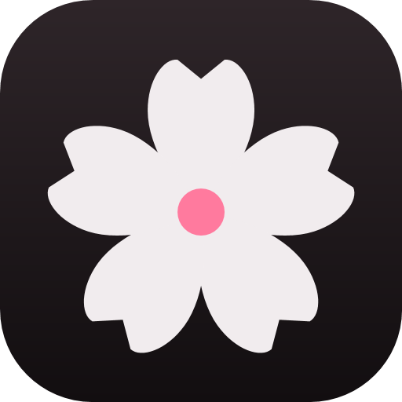
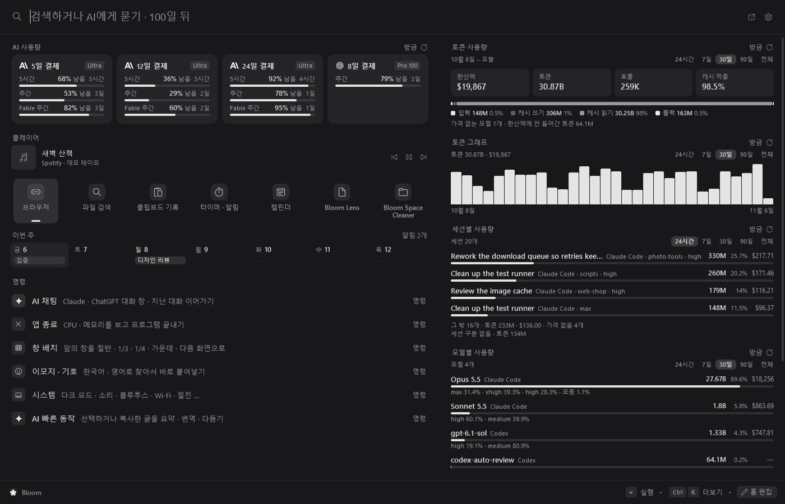
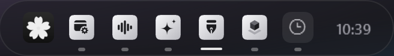

Bloom검색과 AI를 한 줄에서.키 하나로 여는 Windows 런처예요.


검색줄 하나로앱, 파일, 웹 검색, 계산까지 한 줄에서 해요
AI 채팅쓰던 Claude Code, Codex 로그인 그대로 써요
PC 작업 맡기기말로 맡기고, 바꾸는 일은 먼저 물어봐요
작업 알림AI 작업이 끝나면 카드로 알려 줘요
Bloom Lens화면을 골라 묻고, 번역하고, 글자를 복사해요
Bloom Space Cleaner디스크를 어디에 썼는지 지도로 보고 정리해요
옆에 붙는 도구메모, 타이머, 계산기를 런처 옆에 붙여요
작업표시줄 애드온가운데 알약 작업표시줄과 앱 폴더를 써요
WebView 없는 네이티브 앱이고, 무료 오픈소스(MIT)예요. Windows 10, 11용.
Anthropic, OpenAI와 관계없는 비공식 프로젝트예요.